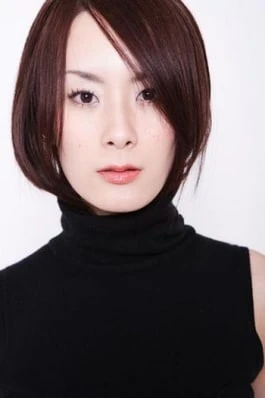

黑眼睛、黑頭髮、黃皮膚，永永遠遠是龍的傳人？透過影視作品破解大家對「黃種人」的刻板印象！
目錄
隨便點選下方其中一個主題便能快速跳到該主題的說明區
前言
「黑眼睛、黑頭髮、黃皮膚」這樣的描述，長久以來被視為東亞人的典型特徵。然而，只要稍微觀察現實，就會發現這種說法與實際情況存在明顯落差。
VIDEO
當我們再進一步把視角放到影視作品與全球審美，就會看到更多耐人尋味的矛盾：
所謂「黃種人」，其實往往膚色白皙
所謂「白種人」，卻常以小麥色為美
電影中的種族衝突，甚至與畫面呈現的膚色不一致
這些矛盾指向同一件事：外貌的意義，並不是自然的，而是被文化與社會所建構。
一、「黃皮膚」的符號性，而非現實描述
在日常觀察中，多數東亞人的膚色其實接近：
而非真正意義上的「黃色」。這種稱呼源自早期人類分類，帶有強烈的簡化與想像成分。
因此，「黃皮膚」更像是一種身份標籤 ，
而不是對顏色的客觀描述。
二、審美反轉：為何白人追求小麥色？
1. 歷史轉變
在歐洲早期社會：
但到了現代：
小麥色＝有時間戶外活動與度假
象徵健康、自由與生活品質
2. 現代審美案例
許多歐美明星會刻意曬出健康膚色，例如：
上圖為俄羅斯魅力模特兒Katya Clover在社交媒體上曬出的小麥色膚色照片
這種膚色不僅不被視為「變黑」，反而是一種吸引力的象徵。
三、東亞的相反邏輯：越白越好
在東亞文化中，審美標準長期走向另一個方向：
即使在現代社會，這種觀念仍然透過：
持續被強化。

上圖為日本女藝人加藤岳美，她的膚色非常白皙，這也是她在日本娛樂圈中被視為美麗的原因之一。她在西元2001年唱的日文歌《響の調べ》（中文：響之調）是我的拿手曲目之一（如下插入影片所示）
VIDEO
註：上圖為日本女藝人山本梓（紅色衣服）與長澤奈央（白色衣服），她們就是典型的膚白東亞美女。她們在西元2002年合唱的日文歌《幸せShaking Hands》也是我的拿手曲目之一（如下插入影片所示）
VIDEO
註：上方的謎因向我們呈現美國的族群多樣性，不過圖片中的東亞裔美國人的膚色很明顯與歐裔美國人一樣白，這也說明膚色不是判斷人種的唯一根據
四、影視案例：《葉問4》的矛盾呈現
在電影《葉問4：完結篇》中，有幾個非常具有代表性的場景：
白人空手道教練（Chris Collins 飾）在唐人街對在場的所有中國人說：「I'm here to show you yellow bitches the taste of real combat. Fight me, with your hokey pokey Kung Fu, I dare you.」
白人軍官（Scott Adkins 飾）在軍中對葉問說出帶有強烈種族歧視的台詞：「You are nothing but another little yellow chink」
VIDEO
VIDEO
看到了嗎？這些白人反派說的台詞都有出現"yellow"這個單詞，但其實：
白人角色的膚色呈現出較深的小麥色
士官赫文（吳建豪 飾）與葉師父（甄子丹 飾）等東亞角色反而顯得更白皙
也就是說：
畫面上的「顏色對比」，與語言中的「種族分類」，是脫鉤的。
這說明了什麼？
種族不是由膚色深淺決定
而是由社會如何分類與想像
歧視語言本質上是權力關係，而非顏色描述
這也是為什麼即使出現「膚色反轉」，種族對立仍然成立。
五、黑髮與黑眼的迷思：天然棕髮以及染髮文化與隱眼文化的視覺革命
除了膚色，「黑頭髮」和「黑眼睛」也是東亞人的標籤。但在現實與影視文化中，這道牆早已倒塌：
天然的棕色： 遺傳學證明，許多東亞人天生帶有深棕色或栗色基因。但在「黑髮即品格」的僵化校規下，如日本與台灣，常有天生棕髮學生被強迫「染黑」的荒謬現象。
影視美學的選擇： 觀察特攝片演員，如許峰 （《鎧甲勇士拿瓦》裡的端木燕）或加藤岳美 （《百獣戦隊ガオレンジャー》裡的Tetomu），其棕髮造型不論是天然或染髮，都在視覺上增加了層次感，打破了純黑髮在鏡頭下的沉重感。
次文化的視覺對抗： 如《灌籃高手》櫻木花道 的紅髮或《麻辣教師GTO》鬼塚英吉 的金髮。對他們而言，染髮是「脫離平庸」的標誌，即便被校方長官訓斥，也要捍衛自己的色彩。
韓流（K-Pop）的定義奪回： 以周子瑜 所屬的女子團體為例，偶像們在舞台上變換五顏六色的髮色和隱眼，證明了亞裔面孔能駕馭任何色彩，徹底模糊了傳統種族的界線。
VIDEO
VIDEO
VIDEO
VIDEO
VIDEO
VIDEO
VIDEO
VIDEO
當歌詞還在傳唱「黑頭髮」時，現代亞洲人早已透過染髮劑，重新奪回了定義自己形象的主控權。
六、外貌其實是「被解讀的訊號」
綜合上述現象，我們能看清一個核心事實：外貌並非固定的物理數據，而是隨環境跳動的「訊號」。
權力的標籤： 同樣的膚色，在《葉問 4》的歧視者口中是惡意的 "Yellow"，在美容院卻是追求健康的「小麥色」。認同的流動： 同樣是染髮，在學生身上可能是「違規」，在周子瑜或加藤岳美身上卻是「空靈與美感」。
外貌本身沒有固定意義，意義來自觀看者腦中的成見，以及展示者背後的勇氣。
七、結論：從矛盾中看清現實
當我們察覺「黃種人」這個詞與現實格格不入時，其實是因為我們看穿了以下落差：
語言分類過於簡化： 用一個「黃」字，無法蓋過從象牙白到古銅色的斑斕光譜。現實美感更加多元： 從許峰的棕髮到鬼塚英吉的金髮和韓國偶像的隱眼，亞洲人的外型早已是「多選題」。文化審美的自覺： 我們不再被動接受「黑眼睛、黑頭髮、黃皮膚」的樣板化標籤，而是主動定義自己。
真正值得關注的，不是人到底「是什麼顏色」，
從一首老歌，到一部特攝英雄劇，再到舞台上的韓流偶像，
作者：周彥廷
創作日期：2026 年 3 月 20 日
所有頁面均來自同一 GitHub Pages 專案